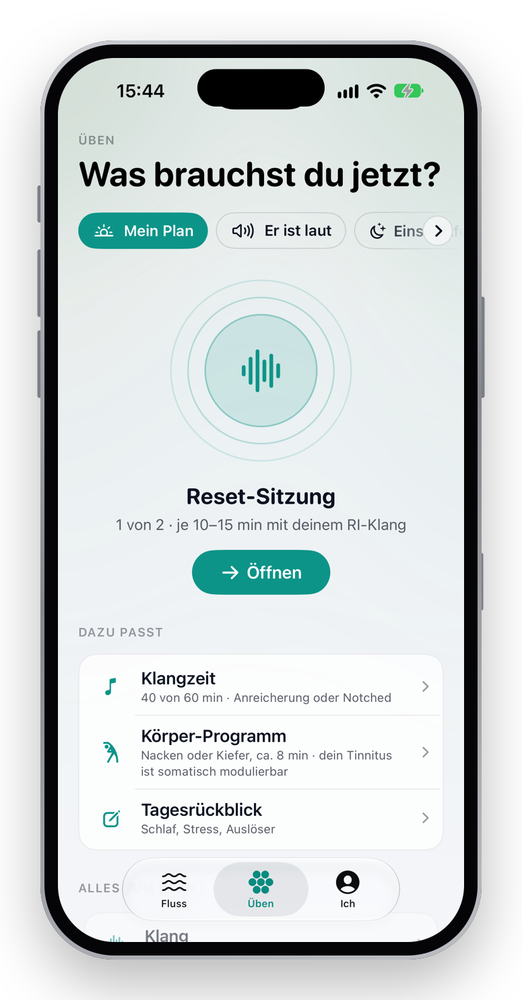
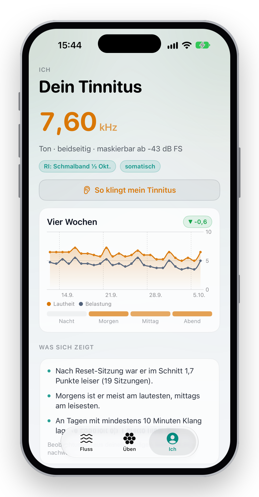
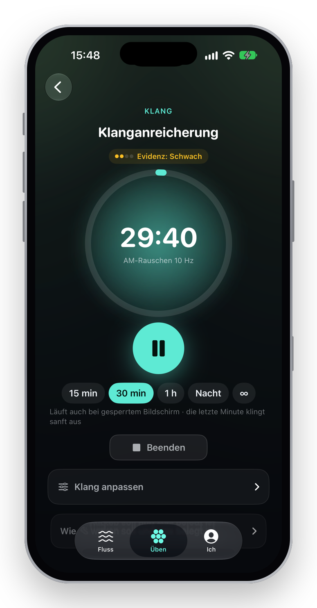
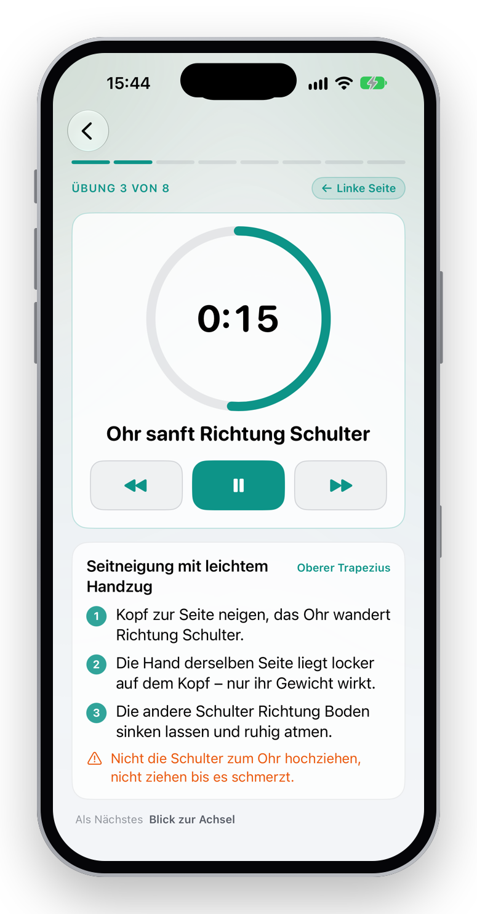
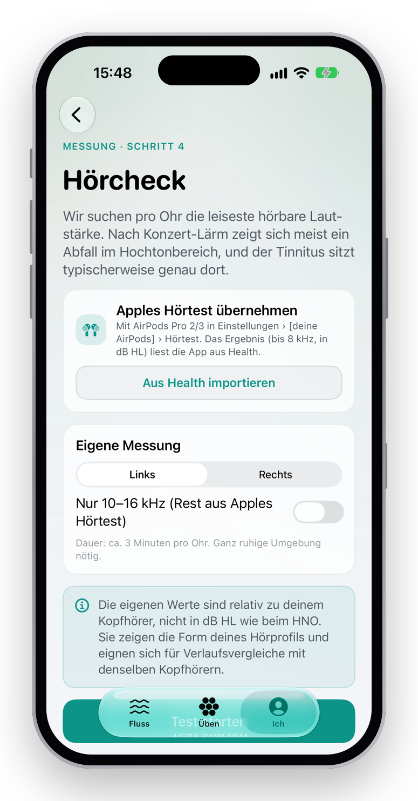
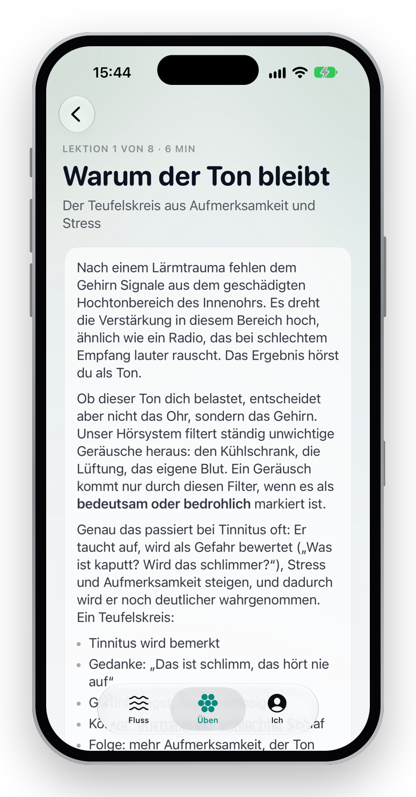
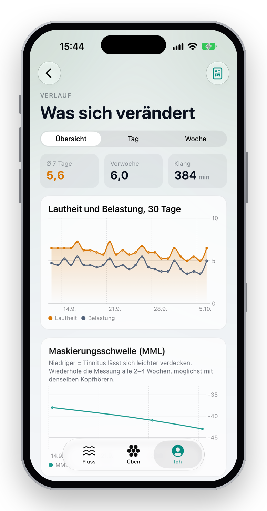
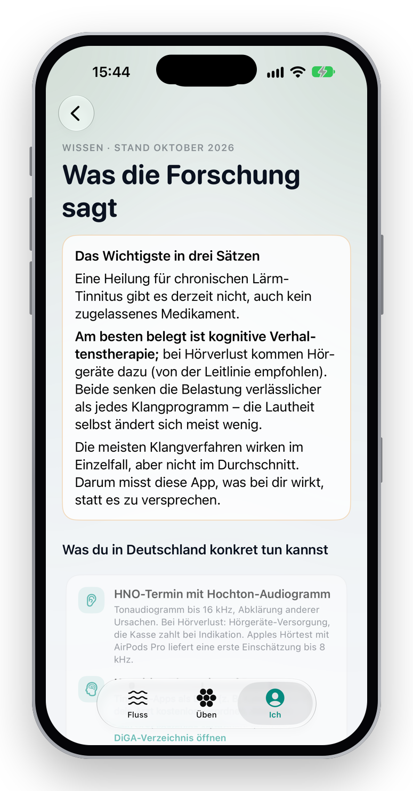
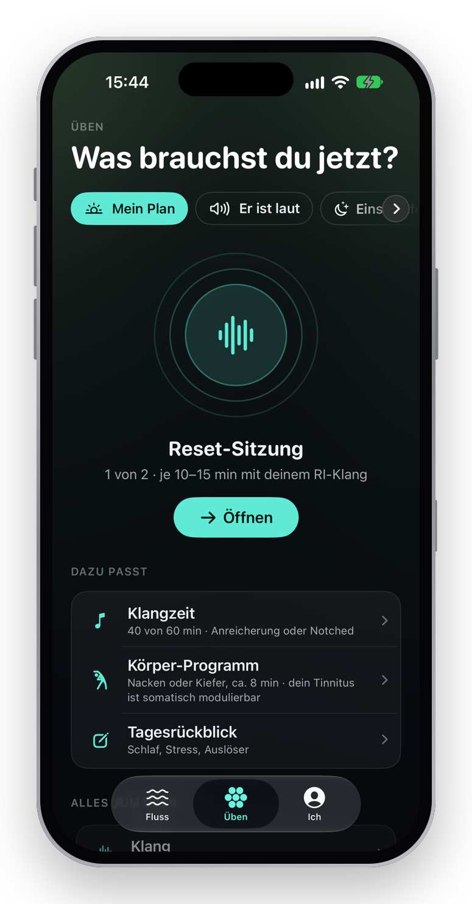

Ein Geräusch, das niemand sonst hört.
Ein Pfeifen, Zischen oder Rauschen, Tag und Nacht. Meist hochfrequent, oft nach Lärm – einem Konzert, einem Knall, Jahren im Großraumbüro mit Kopfhörern.
Für die meisten ist es ein Hintergrundgeräusch. Für einige wird es zum Zentrum des Tages: Schlaf, Konzentration und Stimmung leiden, die Stille wird zum Feind.
„Damit müssen Sie leben.“Der Satz, den viele Betroffene als Erstes hören – und der so nicht stimmt. Man kann lernen, anders damit zu leben. Das ist ein Unterschied.
Das Ohr meldet zu wenig. Das Gehirn dreht lauter.
Nach einem Hörschaden im Hochtonbereich fehlen dem Gehirn Signale. Es erhöht die Verstärkung – wie ein Radio, das bei schlechtem Empfang lauter rauscht. Das Ergebnis hörst du als Ton.
Ob dieser Ton belastet, entscheidet aber nicht das Ohr, sondern die Bewertung im Gehirn. Wird er als Gefahr markiert, steigen Stress und Aufmerksamkeit – und er wird noch deutlicher. Ein Teufelskreis. Genau hier setzt die am besten belegte Behandlung an.
Modell der zentralen Verstärkung: Auerbach et al. 2014; Schaette & McAlpine 2011 · Aufmerksamkeit & Bewertung: Fuller et al. 2020 (Cochrane)
Was die Forschung wirklich weiß.
Über Tinnitus wird viel versprochen. Wir haben die Studienlage bis Oktober 2026 sortiert – nach dem, was in kontrollierten Studien standhält.
Nachweislich wirksam
senkt die Belastung, kaum die Lautheit
Vielversprechend
gute Signale, noch nicht gesichert
Kurzfristig wirksam
Langzeiteffekt offen
Nicht besser als Placebo
in großen oder gepoolten Studien
Die meisten Klangverfahren wirken im Einzelfall – aber nicht im Durchschnitt.
Eine Studie mittelt über hunderte Menschen. Wenn ein Drittel profitiert und der Rest nicht, sieht das Ergebnis nach „wirkt nicht“ aus. Für dich zählt aber nur eine Frage: Hilft es mir?
Die Idee: ein Experiment mit einer Person – dir.
Statt „Probier mal Rauschen“ macht Tinnitus Lab aus dem Ausprobieren ein strukturiertes Selbst-Experiment. Ehrlich gekennzeichnet, mit deinen eigenen Daten, über acht Wochen.
Vermessen
Frequenz-Spektrum per Ähnlichkeits-Bewertung, Feinabstimmung, Maskierungsschwelle, Hörprofil bis 16 kHz, Somatik-Check.
Verblindet testen
Sechs Klänge im RI-Labor, ohne dass du weißt, welcher läuft. Der wirksamste wird dein Reset-Klang.
Üben
Klangprogramme auf deine Frequenz, Kopf-Training nach KVT, geführte Nacken- und Kiefer-Programme.
Auswerten
Vorher/nachher-Bewertungen, Check-ins über den Tag, „Was wirkt bei dir?“ mit Konfidenzbereich statt Bauchgefühl.
Drei Räume. Eine Geschichte.
Keine Wand aus Kacheln. Die App erzählt deinen Tag – in zwei Farben: Teal für Ruhe und alles, was du tust, Amber für den Tinnitus selbst. Nach einem lauten Check-in wird der Hintergrund wärmer.
Der Tag als Welle.
Ein Satz, der den Tag deutet („Leiser als sonst.“). Darunter die Lautheit als Welle, Geübtes als Balken, gestern gestrichelt. Der Check-in liegt direkt im Fluss – zwei Fragen, zehn Sekunden. Eine Zeitleiste führt von heute Morgen über Jetzt zu dem, was noch offen ist.
- Mehrere kurze Einschätzungen am Tag zeigen Muster, die ein Tageswert verdeckt
- Jeder Eintrag lässt sich ändern oder löschen

Was brauchst du jetzt?
Üben beginnt beim Befinden, nicht bei der Funktionsliste: Er ist laut · Einschlafen · Verspannt · Gedankenkarussell · Mein Plan. Ein klarer Vorschlag, dazu passende Übungen – und darunter die Bibliothek aus Klang, Kopf und Körper.
- Klänge mit Live-Spektrum, Sleep-Timer, Sperrbildschirm und Live Activity
- 8 Lektionen nach kognitiver Verhaltenstherapie, geführte Atem- und Achtsamkeitsübungen
- Nacken- und Kiefer-Programm, Schritt für Schritt, mit Kontraindikations-Check

Ein Porträt deines Tinnitus.
Frequenz, Klangcharakter, Maskierbarkeit – und ein Knopf „So klingt mein Tinnitus“, um ihn Angehörigen leise vorzuspielen. Vier Wochen Verlauf, und statt weiterer Diagramme ganze Sätze: „Nach der Reset-Sitzung war er im Schnitt 1,7 Punkte leiser.“
- Beobachtungen, kein Wirkungsnachweis – das steht auch so da
- Apple Health: Schlaf, HRV, Ruhepuls, Lärm, Kopfhörer-Pegel, Audiogramm
- Bericht als PDF für die HNO-Praxis







Ehrlich, privat, sicher.
Ehrlich
Jedes Verfahren trägt seine Evidenz-Stufe. Schwach belegtes heißt „schwach“. Jede Quelle ist in der App antippbar.
Privat
Kein Server, kein Konto, kein Tracking. Daten liegen auf dem Gerät – auf Wunsch in deiner privaten iCloud.
Sicher
Pegel gedeckelt (Klänge ≈ 85, Messsignale ≈ 80 dB SPL), Hörschutz-Dosis nach WHO, Warnzeichen führen zum Arzt.
Ergänzend
Kein Medizinprodukt, keine Therapie. Ein Werkzeug, das die HNO-Abklärung und leitliniengerechte Behandlung begleitet.
Unter der Haube
Native iOS-App in SwiftUI und Swift 6, dazu eine installierbare Web-App als Prototyp. Daten wandern per JSON zwischen beiden.
- Eigene Audio-Engine: AVAudioEngine, Biquad-Notch 8. Ordnung, rosa/braunes Rauschen, AM, CR-Sequenzer, Limiter
- SwiftData + CloudKit, HealthKit, WatchConnectivity
- Apple-Watch-App, Widgets, Live Activity, App Intents, Schlaf-Fokus
- AirPods-Kopfbewegung für Nacken-Übungen und Haltungshinweis
- Getestet: 35 Core-, 11 Audio-, 5 App- und 5 UI-Tests
- Web-App: TypeScript, Vite, Web Audio, offline-fähig
Zum Nachlesen.
Eine Auswahl der wichtigsten Arbeiten. Die vollständige Liste mit Einordnung steht in der App unter „Wissen“. Die Links führen zur Suche in PubMed bzw. zum AWMF-Leitlinienregister.